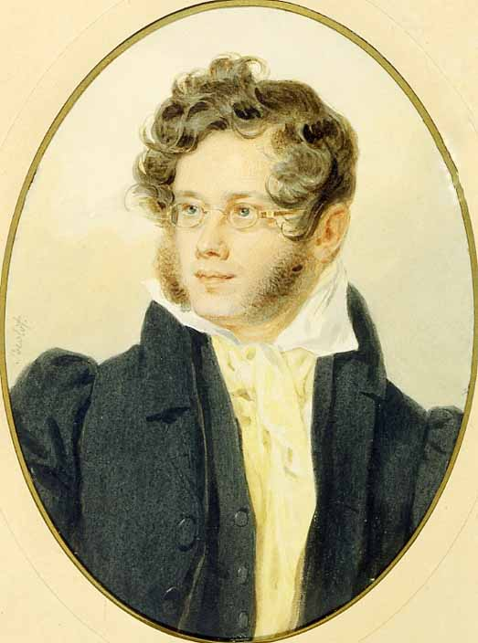
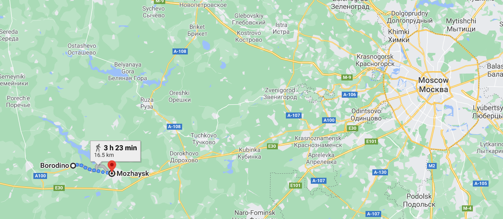
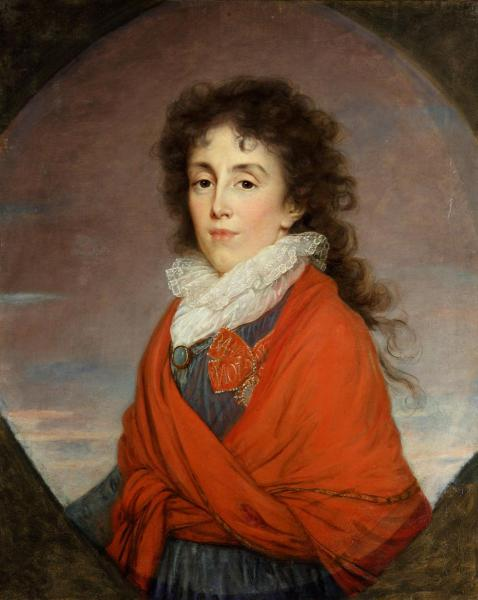

보로디노 에필로그 (2) - 위풍당당 쿠투조프
게시: 2020-10-26T06:30:34+09:00
나폴레옹과 프랑스군이 끔찍했던 하루의 의미에 대해 곱씹으며 우울한 밤을 보내는 동안, 러시아군 진영의 분위기는 어땠을까요? 놀랍게도, 별로 나쁘지 않았습니다. 분명히 그들은 며칠 동안 삽질을 하며 구축해놓은 방어선을 버리고 후퇴했고, 수많은 병력을 잃었다는 것을 쿠투조프부터 맨바닥의 농민병까지 다 알고 있었습니다. 즉, 모두가 프랑스군이 승리했다는 것을 알고 있었습니다. 그러나 러시아군의 분위기는 '프랑스군이 승리했지만 러시아군이 패배한 것은 아니다'라는 역설적인 것이었습니다. 축구 약소국인 우리나라 국민들은 이 감정을 쉽게 이해하실 수 있을 겁니다. 우리나라가 독일이나 브라질과 치열하게 싸운 결과 7대8로 아쉽게 졌다면 분위기가 침통하겠습니까 ? 러시아군의 분위기가 딱 그랬습니다. 전투 직전까지 쿠투조프는 나폴레옹을 격파하고 프랑스군을 쫓아버리겠다고 호언장담하고 있었지만 아무도, 심지어 쿠투조프 본인조차도 그 말을 믿지 않았습니다. 지금도 보로디노 전투에서 부딪힌 양군의 규모에 대해서는 이견이 분분합니다만, 전반적인 평가는 프랑스군의 병력이 10~20% 정도 더 많았다는 것입니다. 병사들의 전투 경험, 특히 지휘관들의 역량 측면에 있어서 유럽 전체에서 프랑스군을 따라갈 군대는 없었습니다. 무엇보다도 프랑스군에는 그 이름만으로도 50% 버프가 들어간다는 전설 속의 영웅 나폴레옹이 있었습니다. 러시아군 총사령관은 그 게으름과 무관심함으로 부하들을 질리게 만든 쿠투조프였고요. 아무도 입 밖으로 이야기를 꺼내지는 않았어도 아마 러시아군 병사들과 장교들은 다들 러시아군이 처첨한 패배를 당할 것이라는 두려움을 마음 속 깊이 가지고 있었을 것입니다. 그런 상황 속에서 전투 결과는 생각보다 나쁘지 않았고, 러시아군은 비록 후퇴를 했을지언정 패주하지는 않았습니다. 이건 우리나라의 월드컵 도전에서 흔히 나오는 평가인 '졌잘싸'(졌지만 잘 싸웠다)를 넘어서는 성과였습니다. 현장에 있던 젊은 장교 중 하나인 비아젬스키(Pyotr Vyazemsky) 대공의 기록에 따르면 이랬답니다. "모두들 황홀경에 빠져 있었다. 우리 모두가 우리 병사들이 얼마나 용감하게 싸웠는지 똑똑히 목격했기 때문이었다. 우리는 그날 우리가 패배했다고는 생각하지 않았을 뿐더러 국지적으로 패배한 부분이 있다는 생각도 전혀 들지 않았다."

(비아젬스키 대공입니다. 그는 보로디노 전투 당시 정말 약관 20세의 나이로 참전하여 현장에 있었습니다. 반면 톨스토이는 현장에 없었지요. 나중에 톨스토이가 쓴 '전쟁과 평화' 중 보로디노 전투에 대한 묘사가 사실과 너무 다르다고 불만을 가지게 된 그는 이 대문호와 그 문제로 키배, 아니 논쟁을 벌인 것으로 유명합니다. 비아젬스키 대공 본인도 장교직은 일찌감치 때려치우고 시인으로 이름을 날렸고 푸쉬킨과 친했으므로 더욱 톨스토이에게 시비를 걸었던 것 같습니다.) 특히 러시아 병사들의 용기에 대한 것은 사실이었습니다. 영국 장교들과 마찬가지로, 러시아 장교들은 농노 출신의 부하 병사들을 노새나 당나귀 수준으로 생각하며 경멸어린 채찍질을 가하며 함부로 취급했습니다. 이렇게 가축 취급을 받던 병사들이 과연 짜르와 조국, 러시아 정교회를 위해 용감히 싸울 것인가에 대해서는 귀족 출신의 러시아 장교들도 속으로는 의구심, 더 나아가 두려움도 가지고 있었을 것입니다. 다음 편에서 더 다루겠습니다만 그런 우려에도 불구하고 러시아 병사들은 체념적인 투지를 가지고 전투에 임했고, 결국 러시아군이 상대적으로 더 선진국 군대였던 오스트리아군이나 프로이센군처럼 무질서하게 패주하지 않았던 것은 지휘관들의 우수성보다는 전적으로 러시아 병사들의 용기 덕분이었습니다. 초급 장교들과 병사들의 분위기가 이랬으니 나태하지만 교활한 허풍쟁이 쿠투조프의 심정은 말할 것도 없었습니다. 그는 당당하게 그날 러시아군이 위대한 승리를 거두었다고 선언했습니다. 바클레이의 참모이자 미운털이 박힌 독일계 대령 볼초겐(Ludwig von Wolzogen)이 러시아군이 심각한 손실을 입은 채 모든 방어선을 포기하고 후퇴했다는 현황 보고서를 들고오자 어디서 말도 안 되는 보고서를 조작해왔느냐며 호되게 비난했습니다. 심지어 하루종일 위험을 무릅쓰고 그에게 '자넨 하루 종일 추잡한 매춘부들을 데리고 술을 퍼마신 것이 틀림없군' 이라고 폭언을 퍼부으며 자신이 전황을 더 잘 파악하고 있다고 호통을 쳤습니다. 놀라고 격분한 볼초겐에게 쿠투조프는 다음과 같은 폭탄 선언을 하여 주변 장교들을 놀라게 했습니다. "프랑스군의 공격은 모든 전선에서 격퇴되었어. 내일 내가 선두에 서서 공세를 취해 프랑스군을 신성한 러시아 영토에서 모조리 쫓아내주지 !" 쿠투조프는 자신이 그냥 객기를 부리는 것이 아니라는 것을 증명하기 위해 정말 다음날 아침 총공세를 펼칠 준비, 즉 부대를 재편하고 포병대에게 포탄과 화약을 지급하는 등의 작업을 당장 실시하라고 바클레이에게 명령서를 보냈습니다. 격전을 치러 모두들 기진맥진해진 한밤중에 말이지요. 그런데 이런 명령이 내려졌다는 소식이 전해지자 놀랍게도 러시아 병사들은 몹시 기뻐했다고 합니다. 자신들이 진 것이 아니라고 생각했던 이들은 이 명령으로 인해 자신들의 생각에 확신이 들었고, 다음 날에야말로 나폴레옹을 완전히 패퇴시킬 수 있다고 자신했습니다. 하지만 바클레이를 비롯한 고위 지휘관들은 모두 경악했습니다. 그들이 보기엔 이건 자살 행위나 다름없는 일이었습니다. 병사들이나 초급 장교들은 '졌잘싸' 분위기에 취해 잘 몰랐으나, 장군들이 파악한 러시아군의 피해는 무지막지한 것이었습니다. 그들은 도저히 다음날 프랑스군에게 다시 도전할 상태가 아니었습니다. 쿠투조프의 부관인 톨(Toll)과 골리친(Galitzine) 등이 한밤중에 전군을 돌아다니며 조사를 해본 결과, 당장 다음 날 아침 전투가 벌어지면 투입할 수 있는 병력은 고작 4만5천에 불과했습니다. 보로디노 전투에 참전한 러시아군 병력이 어느 정도였는지는 10만에서 16만까지 다양한 추정치가 있으나, 대략 12만으로 계산하면 하룻밤 사이에 7만5천이 사라진 셈이었습니다. 물론 이들 전원이 다 죽거나 다친 것은 아니었겠지만, 가용 병력이 전날 밤에 비해 절반 훨씬 아래로 떨어진 것은 확실했습니다. 이 점검 결과를 참모들이 쿠투조프에게 올리자, 쿠투조프는 마지못해 양보한다는 듯이 궁시렁거리며 후퇴를 결정했습니다. 골리친에 따르면 쿠투조프는 애초에 다시 싸울 생각이 1도 없었습니다. 단지 정치적인 이유에서, 톨과 자신에게 직접 부대들을 점검하고 현황 보고를 하라고 한 것일 뿐 처음부터 러시아군이 다시 싸울 상태가 아니라는 것을 잘 알고 있었다는 것이지요.

(보로디노와 모자이스크와 모스크바의 거리입니다. 보로디노에서는 이제 진짜 더 물러설 곳이 없다고 했는데, 싸움에 지고 나면 물러설 곳이 자꾸만 생겨나는 법입니다.)
하지만 쿠투조프는 잠시 동안 있었던(?) 승전 상황을 200% 활용했습니다. 그는 참모들이 부대 점검을 하는 동안 짜르 알렉산드르에게 장황하고 긴 편지를 썼습니다. 이 편지에서 그는 마치 자신이 직접 최전선에 있었던 것처럼 전투 주요 장면을 생생하게 묘사하며 '공격해온 프랑스군에게 큰 손실을 안겨주며 격퇴했고, 러시아군은 한치의 땅도 빼앗기지 않았다'라고 주장했습니다. 다만 남은 병력에 비해 전선이 너무 늘어졌고, 자신의 관심은 프랑스군의 격멸일 뿐 전투 하나하나에 의미를 두지는 않기 때문에 일단 6베르스타(verst, 옛 러시아 단위, 1 베르스타는 대략 1km) 정도 후퇴하여 모자이스크(Mozhaysk)에서 다시 방어선을 꾸미겠다고 알렉산드르에게 통보했습니다. 모스크바 시장인 로스톱친에게도 비슷한 내용의 편지를 쓰며 모스크바는 반드시 지켜낼테니 아무 걱정하지 말라고 큰 소리를 탕탕쳤습니다. 그런데 자세히 보면 양심이 살아있어서인지 기술적으로 교활해서인지 자신이 승리를 거두었다는 말은 전혀 하지 않았다는 것을 알 수 있는데, 자기 와이프에게 보낸 편지에서는 아주 간단명료하게 '나폴레옹과의 전투에서 승리했소' 라고 쓴 것을 보면 아무래도 기술적으로 교활하게 둘러댄 것이라는 것을 짐작할 수 있습니다.

(쿠투조프의 부인 Ekaterina Ilyinichna Golenishchev-Kutuzova입니다. 위키를 뒤져보아도 별다른 기록은 없네요 ?) 그런데, 쿠투조프의 위대함은 엉망진창이었던 보로디노 전투에서의 지휘가 아니라 참담했던 전투 결과를 처리하는 것에서 드러났습니다. 시종일관 쿠투조프에 대해 비아냥거리는 기록을 남긴 '전쟁론'의 저자 클라우제비츠조차도 이 때의 쿠투조프의 일처리에 대해서는 '바클레이의 정직함보다는 쿠투조프의 협잡질이 더 유용했다'라고 평가하고 있습니다. 대체 뭐가 어떻게 되었길래 그랬을까요 ? 다음 편에서는 프-러 양측의 실제 피해와 그 의미에 대해 보시도록 하겠습니다. Source : 1812 Napoleon's Fatal March on Moscow by Adam Zamoyski
en.wikipedia.org/wiki/Battle_of_Borodino
en.wikipedia.org/wiki/Pyotr_Vyazemsky
commons.wikimedia.org/wiki/Category:Ekaterina_Ilyinichna_Golenishchev-Kutuzova_(Bibikova)